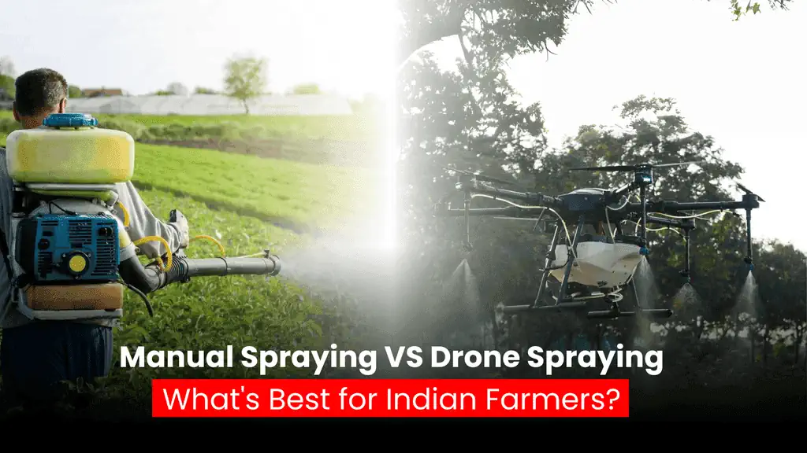
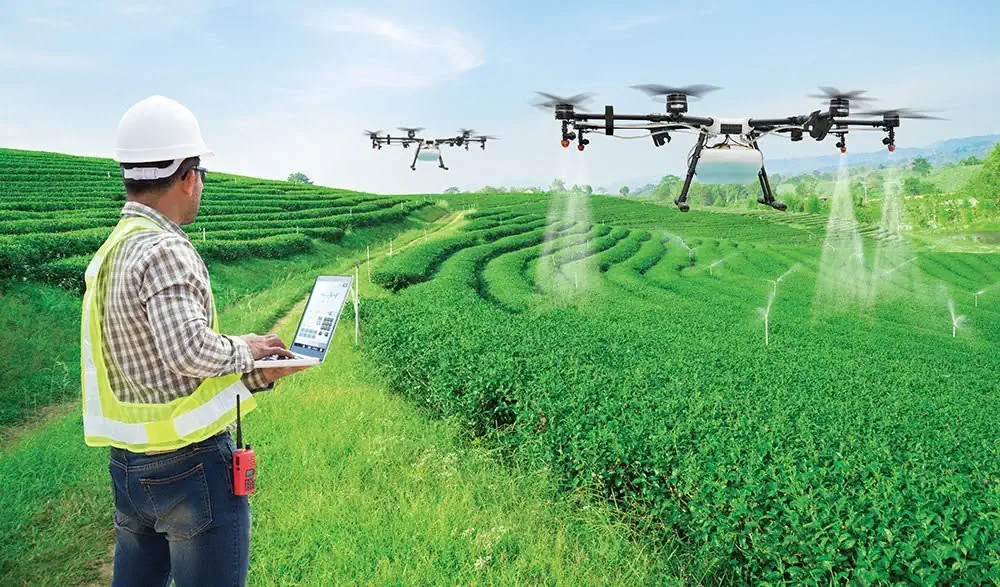
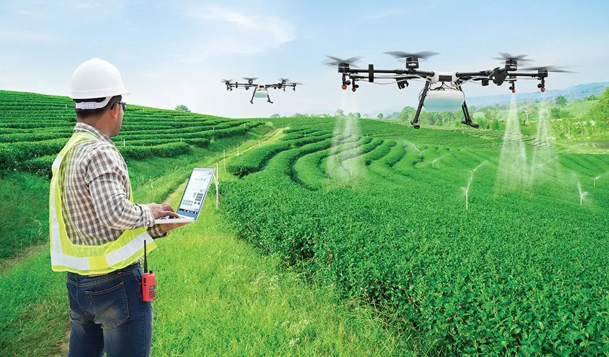

Agricultural spraying plays a critical role in crop protection, yield optimization, and farm sustainability. Traditionally, Indian farmers have relied on manual spraying methods. However, with the rapid adoption of agri-drones, a significant shift is underway.
This article provides a clear, practical comparison between manual spraying and drone spraying, helping farmers, estate owners, and agribusiness stakeholders make informed decisions.
Manual Spraying in Agriculture
How It Works
Manual spraying is typically performed using knapsack sprayers or motorized backpack sprayers operated by farm laborers who walk through the field applying chemicals.
Advantages
- Low initial equipment cost
- Easy to deploy for very small landholdings
- No requirement for advanced technology or training
Limitations
- High labor dependency and rising wage costs
- Health risks due to direct exposure to chemicals
- Uneven spray coverage, leading to overuse or underuse
- Time-consuming, especially for large farms or estates
- Difficult to operate in dense crops, wet soil, or tall plantations
Manual spraying often results in chemical wastage, inconsistent pest control, and increased long-term operational costs.
Drone Spraying in Agriculture
 

How It Works
Agricultural drones use GPS-enabled precision technology to spray crops uniformly from the air. Spray parameters such as droplet size, height, and speed are digitally controlled.
Advantages
- Covers 10–15 acres per hour, dramatically reducing time
- Uniform and precise application, improving effectiveness
- Up to 30–40% reduction in chemical usage
- Zero human contact with hazardous chemicals
- Operates effectively in tall crops, hilly terrain, and wet fields
- Ideal for tea, cotton, sugarcane, paddy, banana, and horticulture crops
Limitations
- Higher initial investment (usually addressed through service models)
- Requires trained pilots and regulatory compliance
With government support and service-based pricing, drone spraying is now accessible even to small and marginal farmers.
Head-to-Head Comparison
| Parameter | Manual Spraying | Drone Spraying |
|---|---|---|
| Speed | Slow | Very Fast |
| Labor Requirement | High | Minimal |
| Chemical Exposure | High | Nil |
| Spray Uniformity | Inconsistent | Highly Precise |
| Cost Efficiency | Low (long term) | High |
| Suitable for Large Farms | No | Yes |
| Technology Level | Traditional | Advanced |
Why Indian Agriculture Is Moving Toward Drone Spraying
India faces shrinking farm labor availability, increasing health awareness, and the need to improve productivity per acre. Drone spraying directly addresses these challenges by offering:
- Precision farming
- Lower operational risk
- Faster execution during critical pest or disease outbreaks
- Compliance with modern, sustainable farming practices
Plantation owners, FPOs, and agribusiness companies are increasingly shifting to Drone-as-a-Service (DaaS) models to avoid capital expenditure while benefiting from advanced technology.
Conclusion: The Smarter Choice for Modern Farming
While manual spraying has served Indian agriculture for decades, it is no longer efficient, safe, or scalable for today’s farming challenges. Drone spraying represents a technological upgrade, not just a replacement—delivering better crop health, lower costs, and safer working conditions.
For farmers and agribusinesses focused on productivity, sustainability, and profitability, drone spraying is not the future—it is the present.